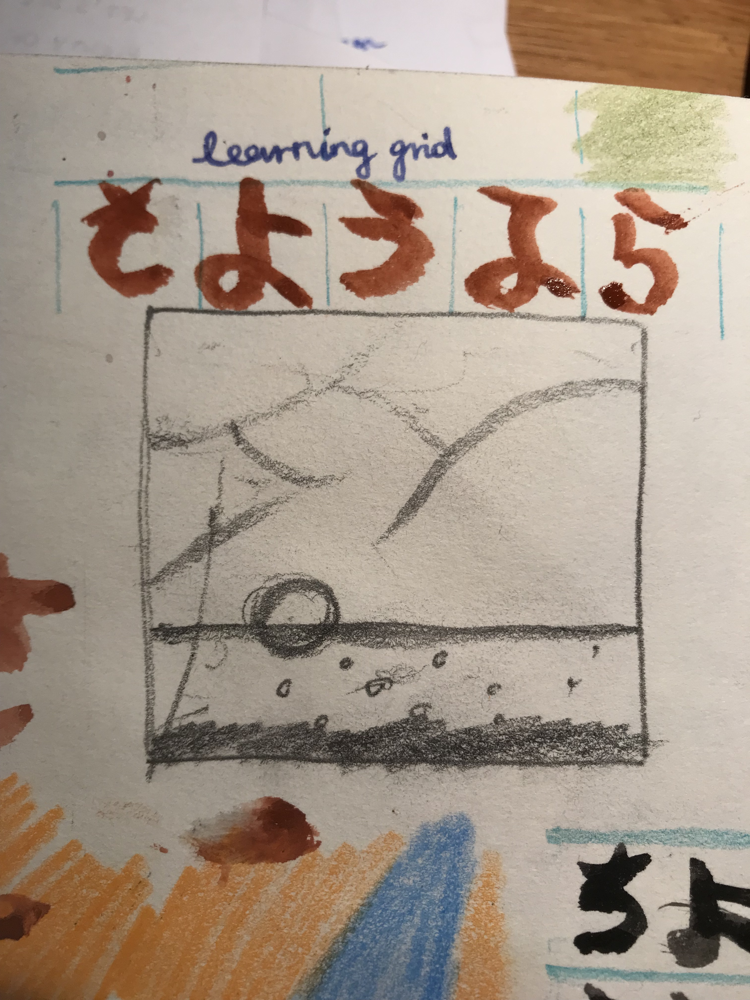
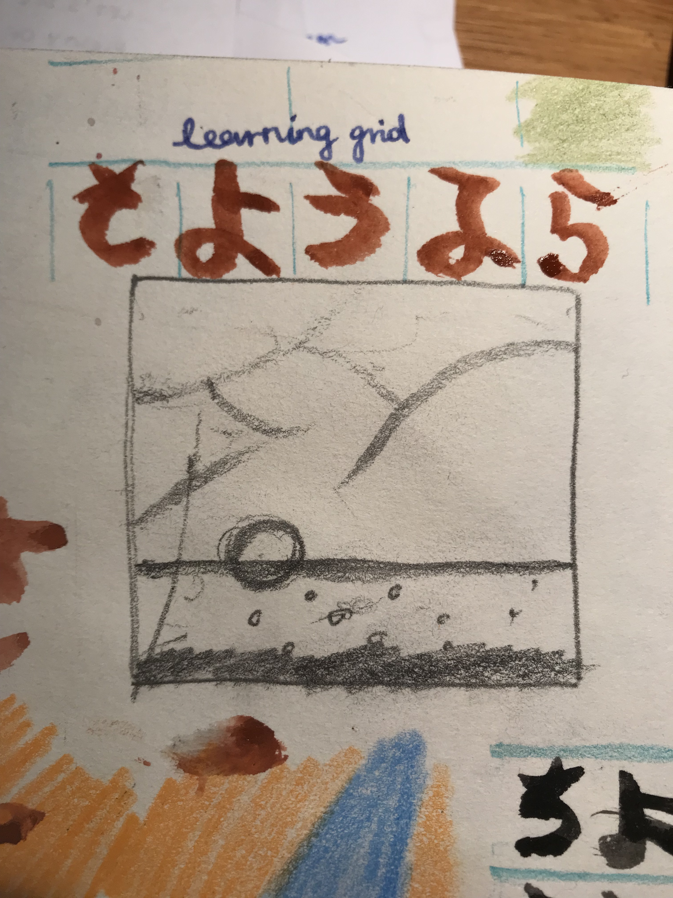

In making these simple additions to the sites I get to debug typos and different "bugs" of sorts that make the site not working, text or elements don't display etc.
The Hiragana drawings are experiments with making grids and also learning hiragana by memorising characters like Sa yo u na ra is - さようなら
1
2
3
4
5
6
7
8
9
I have created this grid that is similar to the grid on the drawing and it is also responsive and changes to flexbox columns when the screen is smaller than 500px
hello
MARS 2022
« I have worked artist-to-artist with potters, photographers, poets, screenwriters, dancers, novelist, actors, directors, — andwith those who knew only what they dreamed to be or who only dreamed of being somehow more creative.
I have seen blocked painters paint, broken poets speak in tongues, halt and lame and maimed writers racing through final drafts. I have come to not only believe but know:
No matter what your age or your life path, whether making art is your career or your hobby or your dream, it is not too late or too egotistical or too selfish or too silly to work on your creativity.
If you are creatively blocked — and I believe all of us are to some extent—it is possible, even probable, that you can learn to create more freely through your willing use of the tools this book provides. Just as doing Hatha Yoga stretches alters consciousness when all you are doing is stretching, doing the exercises in this book alters consciousness when « all » you are doing is writing and playing. Do these things and a breakthrough will follow—whether you believe in it or not.
Whether you call /it/ a spiritual awakening or not.
In short, the theory doesn’t matter as much as the practice itself does. What you are doing is creating pathways in your consciousness through which the creative forces can operate. Once you agree to clearing these pathways, your creativity emerges. In a sense, your creativity is like your blood. Just as blood is a fact of your physical body and nothing you invented, creativity is a fact of you spiritual body and nothing that you must invent.
I took these photographs, I like looking at clouds and trees also. I made this drawing sitting in the sunny garden and I was drawing for process, I don't know what to write üçã look after your microbiome with eating fermented foods regularly, like combucha, sauerkraut, pickles and such. I don't personally eat yoghurt because I am vegan. But there you go.

 
